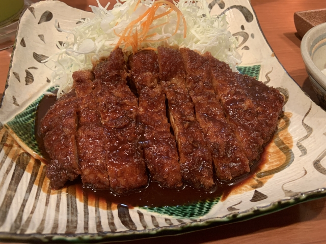
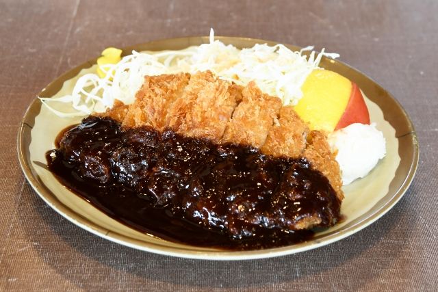
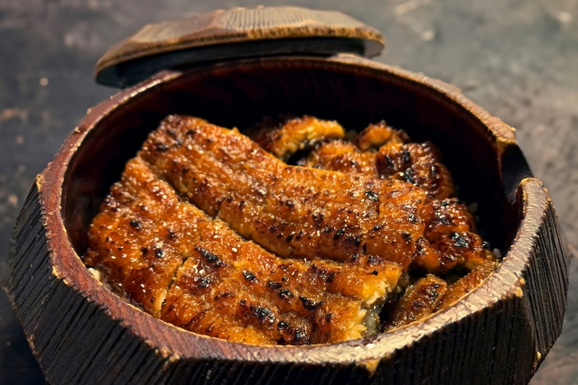
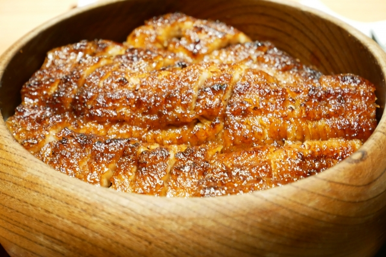
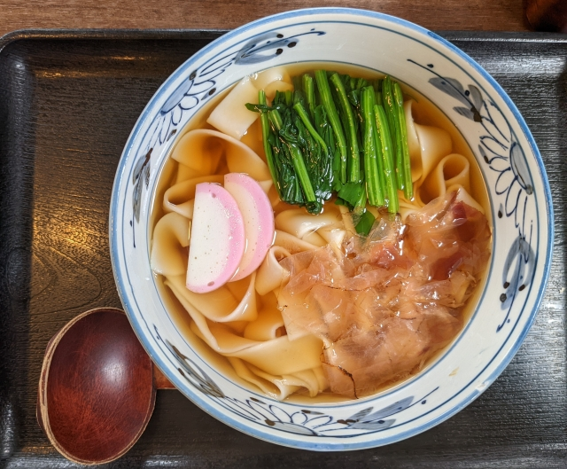
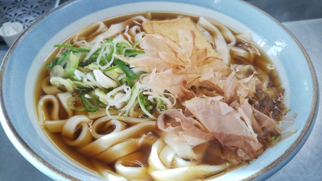

グルメ
制作者おすすめグルメ3選
第1位味噌カツ
名古屋名物の味噌カツは、八丁味噌や豆味噌をベースに出汁，砂糖などを加えたタレを豚カツにかけた料理です．。名古屋のグルメシーンを代表するこの逸品は、一度食べるとやみつきになること間違いなしです。
 第2位ひつまぶし
ひつまぶしは蒲焼にしたうなぎをお櫃に盛り付けた贅沢な一品です．お茶またはダシをかけてお茶漬けにして食べるのもおすすめです．．
 第3位きしめん
厚さ1mm、幅7から8mmほどのきしめんは太くモチモチとした食感が特徴です．冷たいきしめんは暑い夏にぴったりの一品です．
 